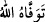
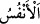
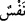

45. Allah, tek olarak anıldığı zaman, âhirete inanmayanların içlerine sıkıntı basar.
Ama Allah’tan başkası anıldığı zaman hemen yüzleri güler.
46. De ki: Ey gökleri ve yeri yaratan, gizliyi de aşikârı da bilen Allah’ım!
Kullarının arasında, ayrılığa düştükleri şeyin hükmünü ancak sen vereceksin.
47. Eğer yerde ne varsa hepsi ve onunla birlikte bir misli daha o zulmedenlerin
olsaydı, kıyamet gününde azâbın fenalığından (kurtulmak için) elbette bunları fedâ
ederlerdi. Halbuki (o gün) onlar için, Allah tarafından, hiç hesaba katmadıkları
şeyler ortaya çıkmıştır.
48. Onların kazandıkları kötülükler (o gün) açığa çıkmış, alaya aldıkları şey,
kendilerini sarmıştır.
49. İnsana bir zarar dokunduğu zaman bize yalvarır. Sonra, kendisine
tarafımızdan bir nimet verdiğimiz vakit, “Bu bana ancak bilgimden dolayı
verilmiştir” der. Hayır o, bir imtihandır, fakat çokları bilmezler.
50. Bunu onlardan öncekiler de söylemişti; ama kazandıkları şeyler onlara fayda
vermedi.
51. Bunun için yaptıkları kötülüklerin vebali onları yakaladı. Bunlardan da
zulmedenlerin işledikleri kötülükler, başlarına gelecektir. Bu hususta Allah’ı âciz
bırakamazlar.
52. Bilmiyorlar mı ki Allah, rızkı dilediğine bol bol verir, dilediğinden de kısar.
Şüphesiz bunda inanan bir kavim için ibretler vardır.
“Allah, ölenin ölüm zamanı gelince, ölmeyenin de uykusunda iken canlarını alır.”
el-Kamus’ta da belirtildiği üzere Allah birinin ruhunu kabzedip aldığı zaman “__WORD__
denir.
“__WORD__ kelimesi “__WORD__in çoğuludur. Şerîat ehlinin yanında “izâfî, insânî, sultânî ruh”
adı verilen nefs-i nâtıkadır. Bedene taalluku, onun hükümleriyle boyanması ve onun
perdelerine bürünmesi îtibâriyle “nefs” diye isimlendirilir. Hadd-i zâtında mücerred bir
varlık olması ve Allah’a dönmesi îtibâriyle “rûh” diye adlandırılmıştır. Şu halde nefs,
süflî nâsûtî bir varlıktır. Ruh ise ulvî lâhûtî bir varlıktır.
Denir ki: İnsânî ruh, cismi hareket ettiren birleşik olmayan/basît bir cevherdir. Ne
sirâyet ne de yakınlık şeklinde bir hulûl ile bedene hulûl etmemiştir. Fakat onun beden
ile tedbir/çekip çevirme ve tasarrufta bulunma taalluku/irtibâtı/alâkası vardır. “De ki:
Ruh Rabbimin emrindendir” (el-İsrâ, 17/85) âyetinin tefsirinde üzerinde durup
incelediğim gibi hayvânî ruh bu ruhun belirtilerinden biridir. Bu ruh insanî ruha göre
durumu, ışığını Güneş’ten alan Ay’ın durumu gibidir. Hayvanlar da insanlar gibi böyle
(hayvânî) bir ruha sâhiptir. Bu öyle bir ruhtur ki, onu düzeltme ve güçlendirme işiyle tıb
ilmi uğraşır. Bu ruh emâneti ve ma’rifeti taşıyamaz. Toprak onun mahalli olan avamın
bedenini yiyip bitirir. Çünkü Allah Teâlâ peygamberlerin, şehid ve sıddîkların